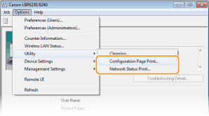
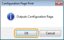
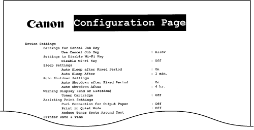
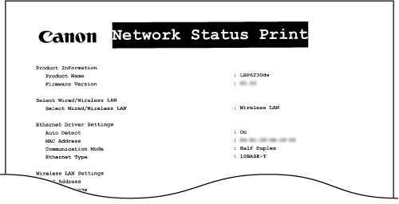

Printing Setting Lists
You can print setting lists from the Printer Status Window. This is convenient when you want to print a list of network settings or a list of power saving and other configuration settings for the machine. Setting lists are formatted to print on Letter size paper. Before starting, load Letter size paper in the multi-purpose tray or manual feed slot. Loading Paper in the Multi-Purpose Tray Loading Paper in the Manual Feed Slot
1
Select the machine by clicking  in the system tray.
in the system tray.
in the system tray.
2
Select [Options]  [Utility] [Configuration Page Print] or [Network Status Print].
[Utility] [Configuration Page Print] or [Network Status Print].

[Configuration Page Print]
Prints a list of the settings under [Options] [Device Settings] together with machine version information.
Prints a list of the settings under [Options]
[Network Status Print]
Prints a list of the network settings of the machine.
Prints a list of the network settings of the machine.
3
Click [OK].

|
Output example: [Configuration Page Print]
 |
|
Output example: [Network Status Print]
 |
 |
|
You can also use the machine's
 (Paper) key to print and view a list of the machine's IPv4 settings, MAC address, wired/wireless LAN settings, and version information. Viewing Network Settings (Paper) key to print and view a list of the machine's IPv4 settings, MAC address, wired/wireless LAN settings, and version information. Viewing Network Settings |